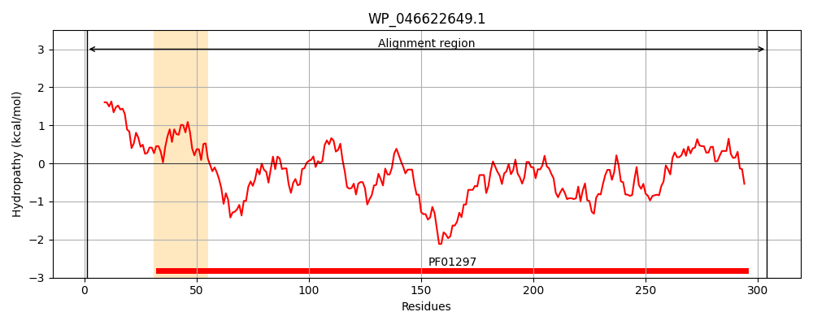
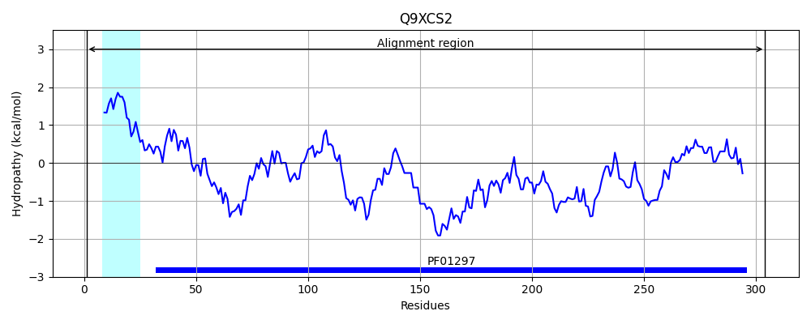
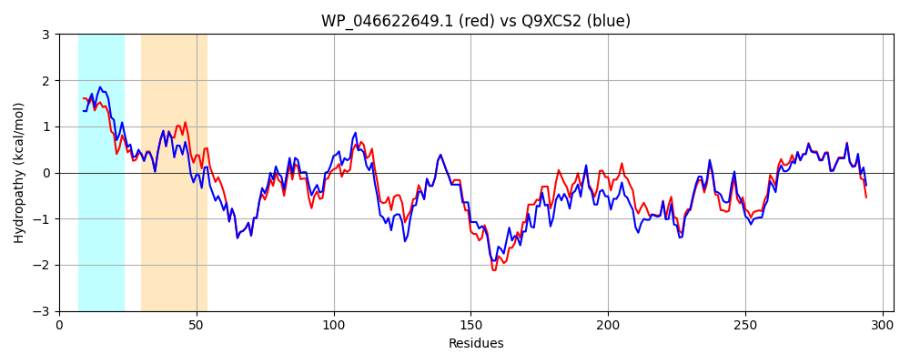

Hit Accession: Q9XCS2
Hit TCID: 3.A.1.15.7
Hit Description: gnl|BL_ORD_ID|19416 gnl|TC-DB|Q9XCS2|3.A.1.15.7 SitA (Salmonella iron transporter: fur regulated) (Iron transport protein, periplasmic-binding protein) - Salmonella typhimurium, and Salmonella typhi.
Mach Len: 304
e:0.000000
Query TMS Count : 1
Hit TMS Count: 1
TMS-Overlap Score: 0.000000
Predicted Substrates:CHEBI:34754;iron(2+), CHEBI:29035;manganese(2+)
BLAST Alignment:
Score: 1277 , Bit scores: 496 bits, E-value: 2.9e-179, Alignment length: 304, Percentage identity: 80
Query: 1 MLHLTPLKSLLLASALALLAATPATAQEKFRVITTFTVIADMAQNVAGDAAVVSSITKPGAEIHDYQPTPGDIKRAQGAQLILSNGLNLERWFARFYQHLQGVPEVVVSEGIQPMGISAGPYSGKPNPHAWMSADNALIYVDNIRDALVKYDPPQADTYRRNAEAYKEKIRQTMAPLQARLAQLPADKRWLVTSEGAFSYLAHDYGLRELYLWPINADQQGTPQQVRKVIDIMKKERIPTIFSESTISDKPARQVAREAGAHYGGVLYVDSLSAADGPVPTWLDLLRVTTETIVNGIQDGMRKQ 304
M +L LK+LL+A +A+LA +PA A+EKF+VITTFTVIADMA+NVAGDAA VSSITKPGAEIH+YQPTPGDIKRAQGAQLIL+NGLNLERWFARFYQHL GVPEVVVS G++PMGI+ GPY+GKPNPHAWMSA+NALIYVDNIRDALVKYDP A Y++NAE YK KIRQ PL+A L ++PAD+RWLVTSEGAFSYLA D ++ELYLWPINADQQGTP+QVRKVID +KK IP IFSEST+SDKPARQVARE+GAHYGGVLYVDSLSAADGPVPT+LDLLRVTTETIVNGI DG+R Q
Sbjct: 1 MTNLHRLKTLLIAGIVAILALSPAYAKEKFKVITTFTVIADMAKNVAGDAAEVSSITKPGAEIHEYQPTPGDIKRAQGAQLILANGLNLERWFARFYQHLSGVPEVVVSTGVKPMGITEGPYNGKPNPHAWMSAENALIYVDNIRDALVKYDPDNAQIYKQNAERYKAKIRQMADPLRAELEKIPADQRWLVTSEGAFSYLARDNDMKELYLWPINADQQGTPKQVRKVIDTIKKHHIPAIFSESTVSDKPARQVARESGAHYGGVLYVDSLSAADGPVPTYLDLLRVTTETIVNGINDGLRSQ 304 | Protein Hydropathy Plots: |
|---|
|  |  |
Pairwise Alignment-Hydropathy Plot:
|
|---|
|  |